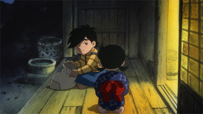

予告編「 風のように」90秒主題歌入りバージョン
下北沢トリウッドにてロードショー決定！
予告編「 風のように」60秒セリフ入りバージョン
ちばてつや「風のように」
1969年に読み切りとして雑誌掲載された短編物語。
ちばてつや氏が、環境問題が話題になり始める少し前に、季節と共に移動し自然と共に生きる養蜂家の姿に共感して生まれた至極の名作。
花畑に立つチヨ
|
|
|
|

縁側にいるチヨと三平
| タイトル | 風のように |
| 作品時間 | 約40分 |
| 制作 | 株式会社エクラアニマル |
| キャスト | 三平 ：野沢雅子 |
| スタッフ | 原作：ちばてつや 作画監督：野口征恒 制作進行：辻 淳也 |
| 公開 | 2016年5月以降・・・下北沢トリウッドにて公開予定 |
| 外部サイト |

作画監督野口征恒が描いた原画の三平
2016年5月16日